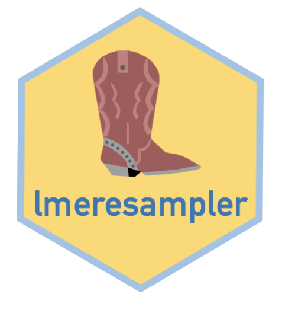

The lme4 and nlme packages have made fitting nested linear mixed-effects models quite easy. Using the functionality of these packages we can easily use maximum likelihood or restricted maximum likelihood to fit our model and conduct inference using our parametric toolkit. In practice, the assumptions of our model are often violated to such a degree that leads to biased estimators and incorrect standard errors. In these situations, resampling methods such as the bootstrap can be used to obtain consistent estimators of the bias and standard errors for inference. lmeresampler provides an easy way to bootstrap nested linear-mixed effects models using either the parametric, residual, cases, CGR (semi-parametric), or random effects block (REB) bootstrap fit using either lme4 or nlme. The output from lmeresampler is an lmeresamp object. Moreover, the lmeresampler package has its own print() and confint() functions, both of which follow the syntax of a generic print() and confint() function; thus, the two commands may be used with lmeresamp objects.
Installation
You can install the latest released version from CRAN with:
install.packages("lmeresampler")
or the latest development version from GitHub:
if(!require(devtools)) install.packages("devtools") devtools::install_github("aloy/lmeresampler")
Usage
Below is a short example of how to execute a parametric bootstrap for models fit either by lme4 or by nlme. For a complete guide outlining the purpose of lmeresampler, the structure of lmeresamp objects, each of the bootstrap types, how to implement parallelization with bootstrap() calls, directions for future developers, and examples, please see the package vignette, available on the lmersampler website.
First, fit the necessary model(s) with the LME package of your choice. Here we show the same model fit first with lme4, then with nlme:
library(lmeresampler) library(lme4) vcmodA <- lmer(mathAge11 ~ mathAge8 + gender + class + (1 | school), data = jsp728) library(nlme) vcmodB <- lme(mathAge11 ~ mathAge8 + gender + class, random = ~1|school, data = jsp728)
Now, to perform a parametric bootstrap, first specify the model to be used, then the function to return the parameters of interest, then type = "parametric, and finally, the number of bootstrap resamples to be computed:
# let's set .f = fixef to specify that we want only the fixed effects bootstrapped # lme4 lmer_par_boot <- bootstrap(vcmodA, .f = fixef, type = "parametric", B = 100) # nlme lme_par_boot <- bootstrap(vcmodB, .f = fixef, type = "parametric", B = 100)
The four other bootstrap types (residual, cases, CGR, and REB) may be executed in a similar way, with some minor changes.